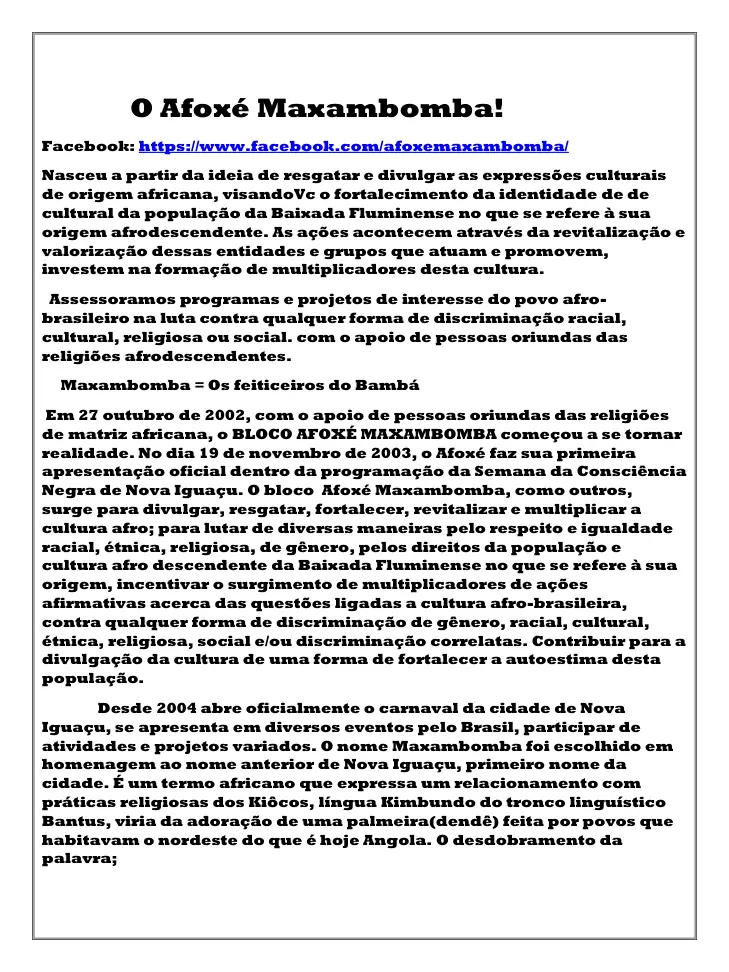
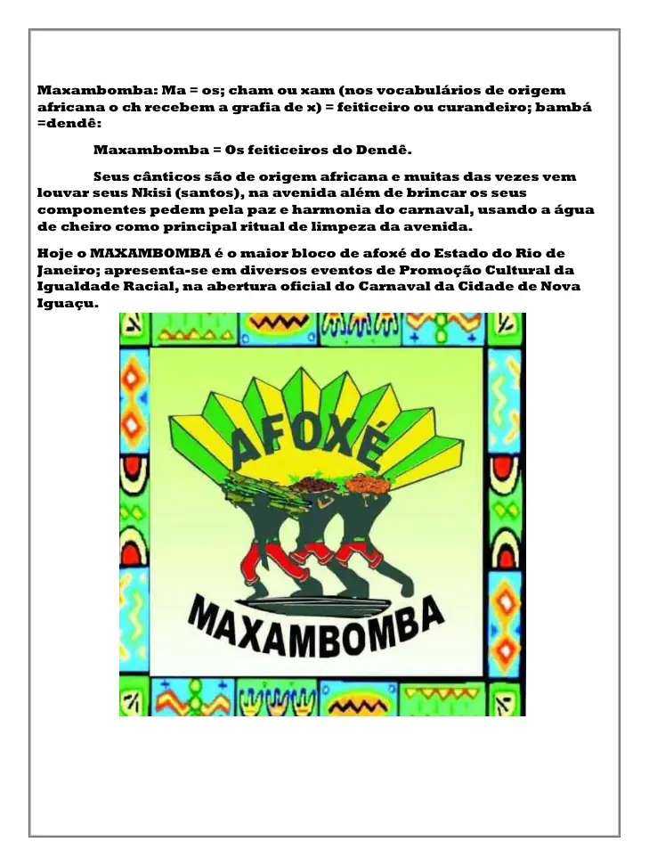

Origem
O portfólio registra que o Bloco Afoxé Maxambomba começou a se tornar realidade em 27 de outubro de 2002, com apoio de pessoas oriundas das religiões de matriz africana.
Fonte página 42O portfólio registra o início do Afoxé em 27 de outubro de 2002, a primeira apresentação oficial em 19 de novembro de 2003, na Semana da Consciência Negra de Nova Iguaçu, e sua presença na abertura oficial do Carnaval da cidade desde 2004.
Conteúdo organizado sem transformar propostas futuras em realizações passadas. Cada afirmação principal está vinculada às páginas do portfólio.
O portfólio registra que o Bloco Afoxé Maxambomba começou a se tornar realidade em 27 de outubro de 2002, com apoio de pessoas oriundas das religiões de matriz africana.
Fonte página 42O acervo registra 19 de novembro de 2003, dentro da programação da Semana da Consciência Negra de Nova Iguaçu.
Fonte página 42O documento afirma que, desde 2004, o Afoxé abre oficialmente o Carnaval da cidade de Nova Iguaçu e participa de eventos em diferentes locais do Brasil.
Fonte páginas 42–43O Maxambomba também aparece nas páginas do Projeto União dos Blocos de Nova Iguaçu nº 34084, com registros visuais ligados ao Edital BLOCO NAS RUAS RJ.
Fonte páginas 6–7As imagens abaixo são reproduções das páginas-fonte usadas para esta ficha de comprovação.



Esta ficha foi construída a partir do Portfólio LUBESNI anexado ao acervo institucional. Para uso em editais, recomenda-se enviar o PDF original junto com o endereço desta página e, quando houver, a fonte pública externa indicada.